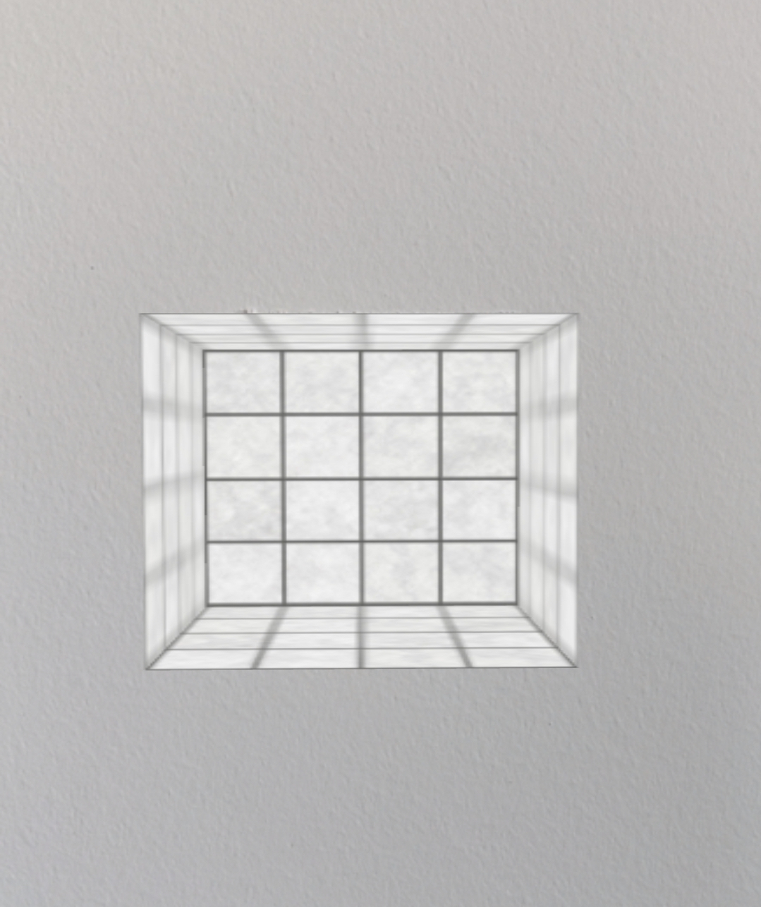

WebAR experiments
The goal of this collection is to provide a set of basic examples that introduce the various features in the Javascript-based Augmented Reality (AR) library and Three.js.
AR.JS | WebXR | Accessibility practices
AR.JS
AR.JS is a web
library that is built on top of the ARToolKit library.
ARToolKit solves two key problems in AR: viewport tracking and virtual interaction, it detects the device camera
and places a virtual camera to calculate the point to overlay the 3D graphics.
AR.JS main features are Image Tracking, Location based AR and Marker tracking.
In this link
you can find a boiler-plate for AR.js + Three.js + Webpack.
These examples focuses on Marker Tracking:
Refraction

Creates a rotating torus knot above a custom marker. The surface of the knot refracts the scene behind it.
source code
Reflection and Refraction

Bubbles come out of a marker, cast shadows and reflect the physical environment.
source code

Hole in the wall

A "hole in the wall" effect. Uses a box geometry to mask the hidden parts of the hole.
source code
Hole in the wall #2

Another "hole in the wall" effect, masking a 3D model indside a box geometry.
source code
Poratl

Creating a "portal to another world" effect. Only visible from one side.
Not very robust. Inspired by Lee Stemkoski portal view.
source code
Video on marker

Video texture start with marker trigger, evolves to particles noise when finished.
source code
Accessibility practices
a series of exercises that supports accessibility in order to investigate how inclusive AR techniques can build meaningful design solutions for all.
Lost marker notification

Adding notification when marker is lost to assit in re-aiming the camera.
source code
Found marker vibration

Adding device vibration when marker is found, affecting the 3D sphere.
source code